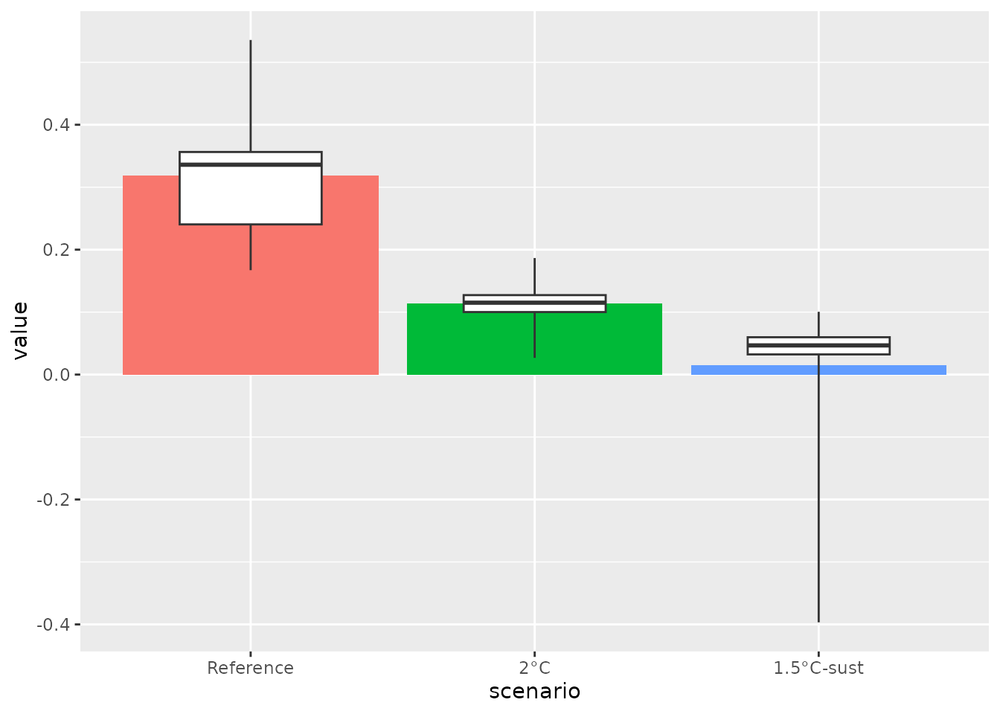
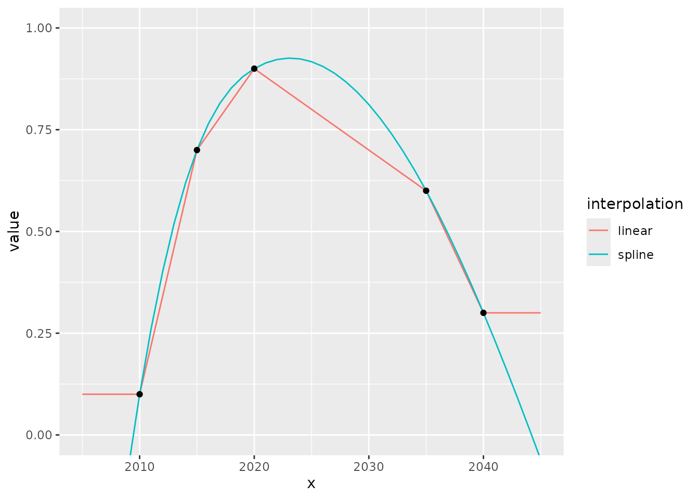
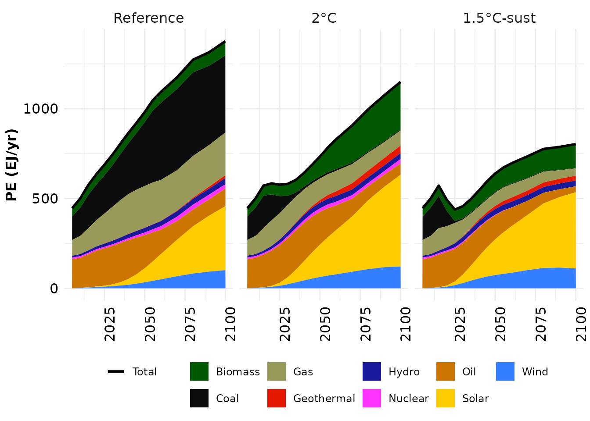
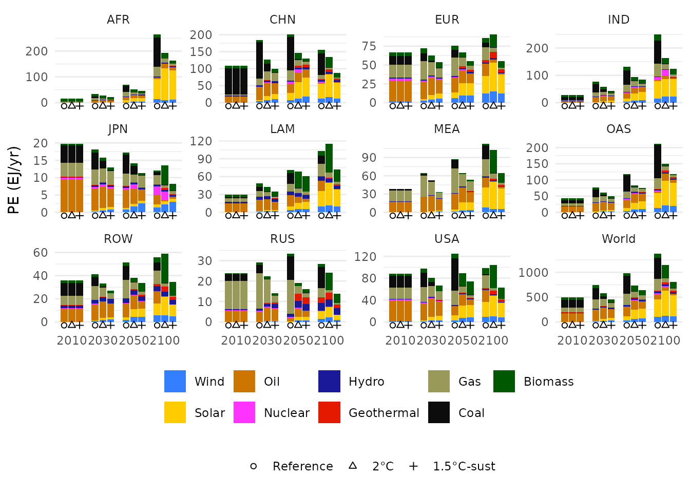

REMIND/IAM Data Analysis Using quitte
Michaja Pehl
2026-04-02
Source:vignettes/quitte-data-analysis.Rmd
quitte-data-analysis.RmdThe quitte package is a grab-bag of utility functions to
work with REMIND/IAM results (or any kind of data) in a
.mif-like format. It builds on the capabilities of the
dplyr, tidyr, and ggplot2
packages.
Load required packages
Generally, when working with quitte, you will need the
dplyr and tidyr packages.
tidyverse is a “collection” package loading these two, as
well as the ggplot2 package and a couple of others.
Data Wrangling
As quitte builds on the capabilities and practices of
the tidy data packages, it is highly recommended to read this
excellent tutorial introducing dplyr and
tidyr. You should be comfortable with the concept of
piping (%>%), as well as the filter(),
select(), group_by(), mutate(),
and summarise() functions. Understanding the join functions
(especially inner_join() and full_join() will
help immensely).
Load Data
Note: We first load some example data for following along with the sections below. If anything is unclear, just keep reading, it will be explained further down.
read.quitte() reads .mif-files and converts
them into five-dimensional long format data frames with columns
model, scenario, region,
variable/unit, period, and
value.
First, select all the .mif files you want to load:
base.path <- 'some/directory/'
data.files <- c(
'REMIND_generic_r7552c_1p5C_Def-rem-5.mif',
'REMIND_generic_r7552c_1p5C_UBA_Sust-rem-5.mif',
'REMIND_generic_r7552c_2C_Def-rem-5.mif',
'REMIND_generic_r7552c_2C_UBA_Sustlife-rem-5.mif',
'REMIND_generic_r7552c_REF_Def05-rem-5.mif',
# 'REMIND_generic_r7552c_REF_Def05-rem-5_tab.mif',
NULL)Tip! Keep your data input formatted in a way that is easy to read and to modify. Separate the directory from the path if there are many files in the same directory. Having each path (or other item) on a separate line (and ending with
NULL) makes it easy to comment out individual files during development or debugging.
Then load all the files:
data <- read.quitte(file.path(base.path, data.files)), we can also load it like this: This is what you will do normally.
Since the example data is included with the quitte package
as a data object in case you just want to try something or give an
example for something, we can also load it like this:
(data <- quitte_example_data)
#> # A tibble: 19,152 × 7
#> model scenario region variable unit period value
#> <fct> <fct> <fct> <fct> <fct> <int> <dbl>
#> 1 REMIND r7552c_1p5C_Def-rem-5 AFR Consumption billio… 2005 618.
#> 2 REMIND r7552c_1p5C_Def-rem-5 AFR Consumption billio… 2010 735.
#> 3 REMIND r7552c_1p5C_Def-rem-5 AFR Consumption billio… 2015 978.
#> 4 REMIND r7552c_1p5C_Def-rem-5 AFR Consumption billio… 2020 990.
#> 5 REMIND r7552c_1p5C_Def-rem-5 AFR Consumption billio… 2025 1248.
#> 6 REMIND r7552c_1p5C_Def-rem-5 AFR Consumption billio… 2030 1555.
#> 7 REMIND r7552c_1p5C_Def-rem-5 AFR Consumption billio… 2035 1900.
#> 8 REMIND r7552c_1p5C_Def-rem-5 AFR Consumption billio… 2040 2284.
#> 9 REMIND r7552c_1p5C_Def-rem-5 AFR Consumption billio… 2045 2703.
#> 10 REMIND r7552c_1p5C_Def-rem-5 AFR Consumption billio… 2050 3185.
#> # ℹ 19,142 more rowsTrim Data
If you know which data you will need you can trim down the data frame early, reducing memory needs and increasing processing speed.
inline.data.frame() is a wrapper function for entering
tabular data in an easy-to-read fashion.
scenarios <- inline.data.frame(
'scenario; scen.name',
'r7552c_REF_Def05-rem-5; Reference',
# 'r7552c_1p5C_Def-rem-5; 1.5°C-def',
'r7552c_2C_Def-rem-5; 2°C',
'r7552c_1p5C_UBA_Sust-rem-5; 1.5°C-sust',
# 'r7552c_2C_UBA_Sustlife-rem-5; 2°C-sust',
NULL)
tmax <- 2100Use Pretty Names
replace_column() can be used to replace a column with
hard-to-read or ugly entries with more pleasant ones. This is quite
useful for preparing data for plots or tables.
order.levels() arranges factor levels (e.g. scenario
names) in a specific order, thus controlling the order with which items
appear in plots.
(data <- data %>%
replace_column(scenarios, scenario, scen.name) %>%
order.levels(scenario = scenarios$scen.name))
#> # A tibble: 9,600 × 7
#> model scenario region variable unit period value
#> <fct> <fct> <fct> <fct> <fct> <int> <dbl>
#> 1 REMIND 1.5°C-sust AFR Consumption billion US$2005/yr 2005 618.
#> 2 REMIND 1.5°C-sust AFR Consumption billion US$2005/yr 2010 735.
#> 3 REMIND 1.5°C-sust AFR Consumption billion US$2005/yr 2015 978.
#> 4 REMIND 1.5°C-sust AFR Consumption billion US$2005/yr 2020 1223.
#> 5 REMIND 1.5°C-sust AFR Consumption billion US$2005/yr 2025 1532.
#> 6 REMIND 1.5°C-sust AFR Consumption billion US$2005/yr 2030 1923.
#> 7 REMIND 1.5°C-sust AFR Consumption billion US$2005/yr 2035 2365.
#> 8 REMIND 1.5°C-sust AFR Consumption billion US$2005/yr 2040 2869.
#> 9 REMIND 1.5°C-sust AFR Consumption billion US$2005/yr 2045 3427.
#> 10 REMIND 1.5°C-sust AFR Consumption billion US$2005/yr 2050 4048.
#> # ℹ 9,590 more rowsPiping
The pipe operator %>% is a shortcut to string any
number of operations together. So instead of writing a long code worm
like
ungroup(mutate(group_by(select(filter(data, 'Reference' == scenario), region, period, value), region), value = cumsum(value)))that you would have to read from the inside out, you can write each function call on a separate line, greatly improving readability as data “flows” from top to bottom, each function being applied in succession.
Filtering
filter() is a more useful and versatile variant of the
data frame extraction operator [. Instead of
data[data$period == 2030 & df$scenario != 'Reference',]use
again, improving readability and decreasing proneness to error.
Predicates (the test) are combined via logical AND, you can use as many
of them as you want, and there are lots of helper functions available in
the dplyr package.
Selecting
select() selects columns from a data frame. So if you
only need columns scenario and region, do
If you need all but model, do
You can rename columns on the way
Grouping
group_by() subdivides a data frame into groups, such
that so-called window functions operate only on the items
within a group. If you, for example, want to calculate the cumulated
energy production over time for different scenarios and regions, you
need to group by those dimensions first.
Mutating
mutate() is the low-level function for modifying
existing or creating new columns. Its output has the same number of rows
as its input.
Sum Things Up
sum_total() sums values up across regions
data %>%
filter(scenario == 'Reference',
variable == 'Consumption',
period == 2050,
region %in% c('CHN', 'IND', 'JPN', 'OAS')) %>%
sum_total(group = region, name = 'all Asia')
#> # A tibble: 5 × 7
#> model scenario region variable unit period value
#> <fct> <fct> <fct> <fct> <fct> <int> <dbl>
#> 1 REMIND Reference CHN Consumption billion US$2005/… 2050 7912.
#> 2 REMIND Reference IND Consumption billion US$2005/… 2050 4229.
#> 3 REMIND Reference JPN Consumption billion US$2005/… 2050 5737.
#> 4 REMIND Reference OAS Consumption billion US$2005/… 2050 6745.
#> 5 REMIND Reference all Asia Consumption billion US$2005/… 2050 24623.or across other dimensions
data %>%
filter(scenario == '2°C',
region == 'RUS',
period == 2035,
variable %in% paste0('SE|Heat|', c('Coal', 'Gas'))) %>%
sum_total(variable, name = 'SE|Heat|fossil')
#> # A tibble: 3 × 7
#> model scenario region variable unit period value
#> <fct> <fct> <fct> <fct> <fct> <int> <dbl>
#> 1 REMIND 2°C RUS SE|Heat|Coal EJ/yr 2035 0.0413
#> 2 REMIND 2°C RUS SE|Heat|Gas EJ/yr 2035 1.43
#> 3 REMIND 2°C RUS SE|Heat|fossil EJ/yr 2035 1.47Add New Variables
calc_addVariable() calculates new variables from
existing ones, using generic formulas. Variable names that are not valid
R identifiers – basically everything inside a .mif-file,
need to be escaped using backticks (“`”).
data %>%
filter(region == 'EUR',
period == 2025,
variable %in% c('PE', 'Population')) %>%
calc_addVariable(
# EJ/yr / million / (3.6e-9 EJ/MWh) * 1e6 1/million = MWh/yr
'`PE per capita`' = 'PE / Population / 3.6e-3',
units = 'MWh/year')
#> # A tibble: 9 × 7
#> model scenario region variable unit period value
#> <fct> <fct> <fct> <fct> <fct> <int> <dbl>
#> 1 REMIND 1.5°C-sust EUR Population million 2025 521.
#> 2 REMIND 1.5°C-sust EUR PE EJ/yr 2025 54.7
#> 3 REMIND 2°C EUR Population million 2025 521.
#> 4 REMIND 2°C EUR PE EJ/yr 2025 64.5
#> 5 REMIND Reference EUR Population million 2025 521.
#> 6 REMIND Reference EUR PE EJ/yr 2025 70.3
#> 7 REMIND 1.5°C-sust EUR PE per capita MWh/year 2025 29.2
#> 8 REMIND 2°C EUR PE per capita MWh/year 2025 34.4
#> 9 REMIND Reference EUR PE per capita MWh/year 2025 37.5Tip! Note down all unit conversions you do where you do them, and include the calculation. This will save you hours of debug-time in the future. (Trust me.)
It is also possible to only keep the newly calculated values for
further manipulation, by settting only.new = TRUE.
data %>%
filter(region == 'OAS',
period == 2070,
scenario != 'Reference') %>%
calc_addVariable(
# EJ/yr / $bn/yr * 1e-15 kJ/EJ * 1e9 $/$bn = kJ/$
'`PE|Coal|GDP intensity`' = '`PE|Coal` / `GDP|PPP` * 1e6',
'`PE|Oil|GDP intensity`' = '`PE|Oil` / `GDP|PPP` * 1e6',
'`PE|Gas|GDP intensity`' = '`PE|Gas` / `GDP|PPP` * 1e6',
'`PE|Nuclear|GDP intensity`' = '`PE|Nuclear` / `GDP|PPP` * 1e6',
'`PE|Biomass|GDP intensity`' = '`PE|Biomass` / `GDP|PPP` * 1e6',
'`PE|Hydro|GDP intensity`' = '`PE|Hydro` / `GDP|PPP` * 1e6',
'`PE|Geothermal|GDP intensity`' = '`PE|Geothermal` / `GDP|PPP` * 1e6',
'`PE|Wind|GDP intensity`' = '`PE|Wind` / `GDP|PPP` * 1e6',
'`PE|Solar|GDP intensity`' = '`PE|Solar` / `GDP|PPP` * 1e6',
units = 'kJ/$',
only.new = TRUE)
#> # A tibble: 18 × 7
#> model scenario region variable unit period value
#> <fct> <fct> <fct> <fct> <fct> <int> <dbl>
#> 1 REMIND 1.5°C-sust OAS PE|Coal|GDP intensity kJ/$ 2070 13.7
#> 2 REMIND 2°C OAS PE|Coal|GDP intensity kJ/$ 2070 26.8
#> 3 REMIND 1.5°C-sust OAS PE|Oil|GDP intensity kJ/$ 2070 447.
#> 4 REMIND 2°C OAS PE|Oil|GDP intensity kJ/$ 2070 600.
#> 5 REMIND 1.5°C-sust OAS PE|Gas|GDP intensity kJ/$ 2070 258.
#> 6 REMIND 2°C OAS PE|Gas|GDP intensity kJ/$ 2070 454.
#> 7 REMIND 1.5°C-sust OAS PE|Nuclear|GDP intensi… kJ/$ 2070 0
#> 8 REMIND 2°C OAS PE|Nuclear|GDP intensi… kJ/$ 2070 91.4
#> 9 REMIND 1.5°C-sust OAS PE|Biomass|GDP intensi… kJ/$ 2070 64.5
#> 10 REMIND 2°C OAS PE|Biomass|GDP intensi… kJ/$ 2070 95.6
#> 11 REMIND 1.5°C-sust OAS PE|Hydro|GDP intensity kJ/$ 2070 75.0
#> 12 REMIND 2°C OAS PE|Hydro|GDP intensity kJ/$ 2070 74.8
#> 13 REMIND 1.5°C-sust OAS PE|Geothermal|GDP inte… kJ/$ 2070 66.6
#> 14 REMIND 2°C OAS PE|Geothermal|GDP inte… kJ/$ 2070 72.9
#> 15 REMIND 1.5°C-sust OAS PE|Wind|GDP intensity kJ/$ 2070 373.
#> 16 REMIND 2°C OAS PE|Wind|GDP intensity kJ/$ 2070 305.
#> 17 REMIND 1.5°C-sust OAS PE|Solar|GDP intensity kJ/$ 2070 1132.
#> 18 REMIND 2°C OAS PE|Solar|GDP intensity kJ/$ 2070 943.calc_growthrate() calculates the growth rate (in
%/yr) of a time series, appending
[Growth Rate] to the variable name:
data %>%
calc_growthrate(only.new = TRUE, filter.function = "Consumption")returns a data.frame with the variable
Consumption [Growth Rate]. filter.function can
be a vector of variable names or a function that filters
data.
Net Present Value of a Time Series
calcCumulatedDiscount() calculates the net present value
of a time series.
data %>%
filter(scenario != 'Reference',
region == 'World') %>%
calcCumulatedDiscount(nameVar = 'Policy Cost|Consumption Loss') %>%
select(-model, -region, -unit) %>%
pivot_wider(names_from = 'scenario')
#> # A tibble: 16 × 4
#> variable period `2°C` `1.5°C-sust`
#> <fct> <int> <dbl> <dbl>
#> 1 Policy Cost|Consumption Loss|aggregated 2005 0 0
#> 2 Policy Cost|Consumption Loss|aggregated 2010 0 0
#> 3 Policy Cost|Consumption Loss|aggregated 2015 0 0
#> 4 Policy Cost|Consumption Loss|aggregated 2020 -163. -374.
#> 5 Policy Cost|Consumption Loss|aggregated 2025 -293. -246.
#> 6 Policy Cost|Consumption Loss|aggregated 2030 -77.9 821.
#> 7 Policy Cost|Consumption Loss|aggregated 2035 429. 2005.
#> 8 Policy Cost|Consumption Loss|aggregated 2040 1106. 2927.
#> 9 Policy Cost|Consumption Loss|aggregated 2045 1799. 3449.
#> 10 Policy Cost|Consumption Loss|aggregated 2050 2438. 3564.
#> 11 Policy Cost|Consumption Loss|aggregated 2055 3097. 3511.
#> 12 Policy Cost|Consumption Loss|aggregated 2060 3863. 3481.
#> 13 Policy Cost|Consumption Loss|aggregated 2070 5537. 3504.
#> 14 Policy Cost|Consumption Loss|aggregated 2080 7141. 3481.
#> 15 Policy Cost|Consumption Loss|aggregated 2090 8436. 3310.
#> 16 Policy Cost|Consumption Loss|aggregated 2100 9324. 3026.Calculate Sample Quantiles
calc_quantiles() makes it easy to produce sample
quantiles corresponding given probabilities from data frames.
(data.plot <- data %>%
filter(region != 'World',
period == 2040) %>%
calc_addVariable(
# MtCO2/$bn * 1e9 kg/Mt * 1e-9 $/$bn = kgCO2/$
'`CO2 intensity`' = '`Emi|CO2` / `GDP|PPP`',
units = 'kGCO2/US$2005',
only.new = TRUE) %>%
group_by(model, scenario, variable, unit, period) %>%
calc_quantiles() %>%
pivot_wider(names_from = 'quantile'))
#> # A tibble: 3 × 10
#> # Groups: model, scenario, variable, unit, period [3]
#> model scenario variable unit period q0 q25 q50 q75
#> <fct> <fct> <fct> <fct> <int> <dbl> <dbl> <dbl> <dbl>
#> 1 REMIND 1.5°C-sust CO2 inte… kGCO… 2040 -0.397 0.0323 0.0467 0.0598
#> 2 REMIND 2°C CO2 inte… kGCO… 2040 0.0267 0.100 0.115 0.127
#> 3 REMIND Reference CO2 inte… kGCO… 2040 0.167 0.240 0.336 0.356
#> # ℹ 1 more variable: q100 <dbl>This is quite useful for plotting uncertainty ranges.
ggplot() +
geom_col(
data = data %>%
filter(region == 'World',
period == 2040) %>%
calc_addVariable(
# MtCO2/$bn * 1e9 kg/Mt * 1e-9 $/$bn = kgCO2/$
'`CO2 intensity`' = '`Emi|CO2` / `GDP|PPP`',
units = 'kGCO2/US$2005',
only.new = TRUE),
mapping = aes(x = scenario, y = value, fill = scenario)) +
scale_fill_discrete(guide = 'none') +
geom_boxplot(
data = data.plot,
mapping = aes(
x = scenario,
ymin = q0, lower = q25, middle = q50, upper = q75, ymax = q100),
stat = 'identity',
width = 0.5)
It can also be done for arbitrary quantiles
data %>%
filter(region == 'World',
period == 2040) %>%
calc_addVariable(
# MtCO2/$bn * 1e9 kg/Mt * 1e-9 $/$bn = kgCO2/$
'`CO2 intensity`' = '`Emi|CO2` / `GDP|PPP`',
units = 'kGCO2/US$2005',
only.new = TRUE) %>%
group_by(model, scenario, variable, unit, period) %>%
calc_quantiles(probs = c(low = 1/3, high = 2/3, 'very high' = 4/5)) %>%
pivot_wider(names_from = 'quantile')
#> # A tibble: 3 × 8
#> # Groups: model, scenario, variable, unit, period [3]
#> model scenario variable unit period low high `very high`
#> <fct> <fct> <fct> <fct> <int> <dbl> <dbl> <dbl>
#> 1 REMIND 1.5°C-sust CO2 intensi… kGCO… 2040 0.0154 0.0154 0.0154
#> 2 REMIND 2°C CO2 intensi… kGCO… 2040 0.114 0.114 0.114
#> 3 REMIND Reference CO2 intensi… kGCO… 2040 0.319 0.319 0.319Interpolate Missing Periods
interpolate_missing_periods() adds missing periods to a
data frame and interpolates missing values. It uses either
linear or spline interpolation and can extend missing
data before/after the first/last period in the original data.
data.example <- tribble(
~x, ~value,
2010, 0.1,
2015, 0.7,
2020, 0.9,
2035, 0.6,
2040, 0.3)
data.plot <- bind_rows(
data.example %>%
interpolate_missing_periods(
x = seq(2005, 2045, 1), expand.values = TRUE,
method = 'linear') %>%
rename(linear = value) %>%
gather(interpolation, value, -x),
data.example %>%
interpolate_missing_periods(
x = seq(2005, 2045, 1), expand.values = TRUE, method = 'spline') %>%
rename(spline = value) %>%
gather(interpolation, value, -x)
)
#> Warning in interpolate_missing_periods_(data, periods, value,
#> expand.values, : Expanded values of spline interpolation beyond
#> original data range. Results may be nonsensical.Be careful when using this, as the results may be nonsensical.
ggplot(mapping = aes(x = x, y = value)) +
geom_line(data = data.plot, mapping = aes(colour = interpolation)) +
geom_point(data = data.example) +
coord_cartesian(ylim = c(0, 1))
In this case, values below 0 might be meaningless. So use spline extensions with care.
Plotting with mip
Data in quitte format is easily passed to the plot
functions in the mip package.
data %>%
filter('World' == region,
grepl('^PE\\|', variable)) %>%
mip::mipArea(x = .) +
facet_wrap(~ scenario)
data %>%
filter(period %in% c(2010, 2030, 2050, 2100),
grepl('^PE\\|', variable)) %>%
mip::mipBarYearData(x = .) +
facet_wrap(~ region, scales = 'free_y')
Note: You don’t have to call the
mip-functions via the double colon (::) operator, but would load the package instead withlibrary(mip). This is only needed in this vignette, sincequittecan’t import themippackage.)
Plotting ‘correct’ Bars
If bar plots are used naively (as in: without extra care), the bars for periods after 2055 are too narrow and either in the wrong places
colours_PE <- c('Coal' = '#0C0C0C',
'Oil' = '#663A00',
'Gas' = '#E5E5B2',
'Nuclear' = '#FF33FF',
'Hydro' = '#191999',
'Biomass' = '#005900',
'Geothermal' = '#E51900',
'Wind' = '#337FFF',
'Solar' = '#FFCC00')
data_plot <- quitte_example_data %>%
filter('r7552c_1p5C_Def-rem-5' == scenario,
'EUR' == region,
grepl('^PE\\|', variable),
2100 >= period) %>%
mutate(variable = sub('^PE\\|', '', variable)) %>%
order.levels(variable = rev(names(colours_PE)))
ggplot() +
geom_col(
data = data_plot,
mapping = aes(x = factor(period), y = value, fill = variable)) +
scale_fill_manual(values = colours_PE,
name = NULL) +
labs(x = NULL, y = 'EJ/yr')
or spread out with large gaps in between.
ggplot() +
geom_col(
data = data_plot,
mapping = aes(x = period, y = value, fill = variable)) +
scale_fill_manual(values = colours_PE,
name = NULL) +
scale_x_continuous(breaks = unique(data_plot$period),
name = NULL) +
labs(y = 'EJ/yr')
In both cases, the visual representation of the data is distorted, since the are of the bars should correspond to the integral of the variable over time. (3 EJ over 10 years should result in a bar with twice the area than 3 EJ over 5 years.)
To correct this, you can use the function
add_remind_timesteps_columns, that adds two columns to the
data frame, xpos and width, which can be used
to create a ‘correct’ bar plot:
ggplot() +
geom_col(
data = data_plot %>%
add_remind_timesteps_columns(gaps = 0.1),
mapping = aes(x = xpos, width = width, y = value, fill = variable)) +
scale_fill_manual(values = colours_PE,
name = NULL) +
scale_x_continuous(breaks = unique(data_plot$period),
name = NULL) +
labs(y = 'EJ/yr')
This is also available through the utility function
ggplot_bar_remind_vts:
periods <- unique(data_plot$period)
periods <- periods[which(!periods %% 10)]
ggplot_bar_remind_vts(data_plot) +
scale_fill_manual(values = colours_PE, name = NULL) +
scale_x_continuous(breaks = periods, name = NULL) +
labs(y = 'EJ/yr')